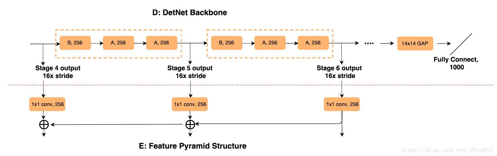

DetNet: A Backbone network for Object Detection
- Authors: Zeming Li, Chao Peng, Gang Yu, Xiangyu Zhang, Yangdong Deng, Jian Sun
- Link: https://arxiv.org/abs/1804.06215
- Tags:
BackBone水文 - Year: 2018
- Official Code: Not Official Released
- Implementation: https://github.com/tsing-cv/DetNet
Motivation
- BackBone For Object Detection Need:
- 相对与图片分类, 需要更多的中间层(FPN,RetinaNet)
- 目标检测 除了 识别目标, 还需要定位目标
- 下采样使得感受野增大, 同时也使得定位信息丢失
- 目标: 保持空间分辨率, 同时增大感受野
- 原来的图片分类网络存在的问题
- 目标检测 和 分类网络的 stage可能不一样, 比如FPN还需要 上采样的层
- 层越深, 感受野变大, 但物体的边界也变得模糊, 导致不能回归出好的边界
- 小物体的丢失
Detail
- 两个问题
- 保留较高的分辨率会带来计算量和内存消耗的增加
- 不下采样, 语义信息不够
- 前四层和ResnNet一样
- 使用孔卷积保持分辨率
- 和FPN, 上采样之后 直接相加 然后过一个卷积层融合
